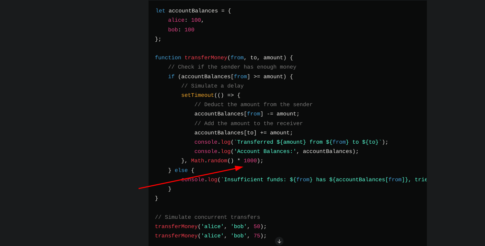
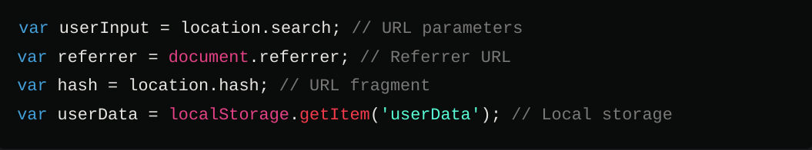
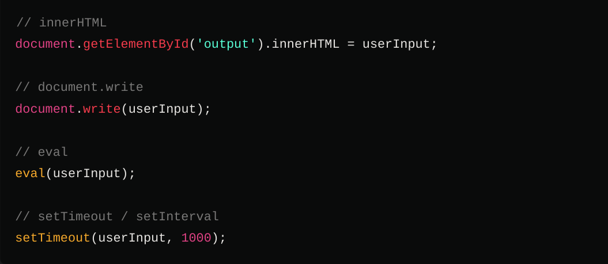
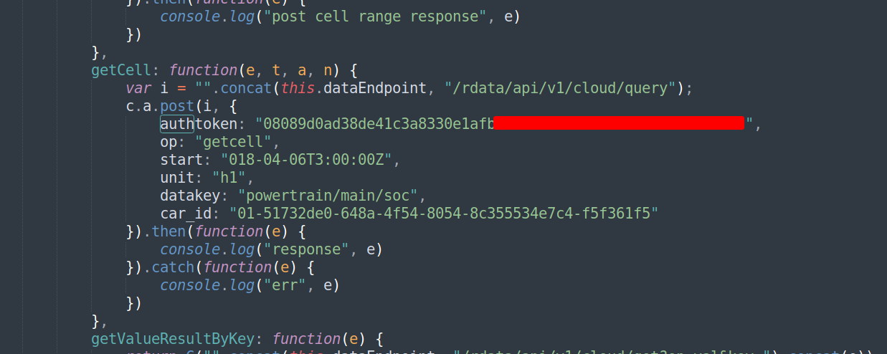
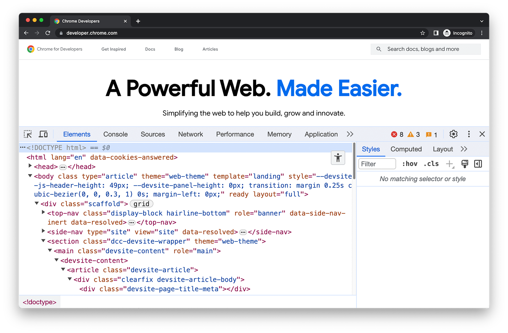

Without further waiting lets dive in, I wont be going into the details of what JS is and how its used. I will be defining ways to use it for Bug bounty only, make sure you are aware of that.

So JS files are tresure mines for hunters , why you may ask .. its because all functionalities remain dormant in these files waiting to be tapped into .
Lets look at this JS code for example.
So here is a nice and easy way to understand how JS files can be very crucial, lets imagine 2 customers requests are send concurrently .This allows an attacker to replay an attack with the same request to affect the transfermoney function.
The main question is how to locate these kinds of potential locations and knowing what affects what!! Right?
I highly recommend learning JS as its the back bone for hackers.
So lets explore more first of all my methodology heavily relies on discovering how the client side works.
Tooling for the job
Lets look into how can we get our hands on these files. getJS is one tool to look into. Or you can use this website for it.
Now that we have the files. Lets see what and how to look for vulnerable patterns.
Lets take Dom XSS for example
These are some of the html sources and sinks that can be exploited for XSS. If you are unaware of what sources and sinks are click on this
video to find out.
We can run some automated tools like this DomXSS finder and we will get into this laterwards but this is another great tool Jsluice by Tomnomnom. Rather than using regular expressions alone, jsluice uses go-tree-sitter(a library) to look for places that URLs are known to be used, such as being assigned to document.location, passed to window.open(), or passed to fetch() etc.
Similarly

Remember to stand out and actuallly get to the top you need not to rely on tools
Instead you should know what you are doing and be able to enumerate JS files and explain the code to other if you want to succeed keep this in mind.
List of what can be done with JS files.
I will breifly explain the attack vectors that can be produced from JS files alone. As explaining each bug class in one article is not efficient
1. Static Code Analysis
What do I mean by that ?!
Review for Sensitive Data Exposure: Look for hardcoded credentials, API keys, tokens, and other sensitive information.
Here the tool
JSluice comes into play.
Identify Insecure Coding Practices: Search for uses of eval, document.write, innerHTML, and other functions that can lead to XSS vulnerabilities.
Analyze for Logic Flaws: Inspect the code for business logic flaws that can be exploited.
Check for Deprecated/Unsafe Functions: Identify the use of deprecated JavaScript functions or unsafe coding practices.
Look for Unused Code: Detect unused or dead code that could potentially be removed or that might hide vulnerabilities.
This for example
This api key was found using the extension
Trufflehog its a good tool. Lets dive into this image as it has alot of depth into it. This api key seems to be used to extrat some data how are we going to use it?.
Simple by using curl we can forge a request with the headers and specfic api endpoint extracting user data.
2.Dependency Analysis
Identify and Analyze Dependencies: Determine the libraries and frameworks being used and check them for known vulnerabilities.
Verify Dependency Versions: Ensure that all dependencies are up-to-date and free from known security issues using tools like npm audit or yarn audit.
3.Code Execution Flow Analysis
Identify Critical Functions: Map out critical functions and their execution flow to understand potential attack vectors.
Review Event Listeners and Handlers: Examine event listeners and handlers for potential issues like race conditions or improper validation.
4.Reverse Engineering and Obfuscation Analysis
Deobfuscate Code: If the JavaScript is obfuscated, deobfuscate it to understand its functionality better.
This is one hefty of a task,lets see how we can deobfuscate the code. JSnice is a great tool to rename variables assigned different characters to increase maximum time spent by a malicious threat actor.
This is like how locks are used to restrict access, when asked from a lockpicker he said locks are not for protection they simply decrease the efficiency of the process and create diversions in actions. Whilst alot of hacker despise the idea of obfuscatoin, simply because they create a env of trust and has a negative impact on how a company deals with front end code relying on obfuscation.
I would recommend watching these vids ---->
(--) ,
(-_-) this one too,
:) if you want to further understand how and what do i mean.
Analyze for Malicious Code: Look for signs of malware, adware, or other malicious activities embedded within the JavaScript.
5.Manual Code Review

This is where the fun of hacking lies. You need to be well enough acquineted with JS to be able to read through the code analyse whats happening, as i mentioned earlier you need to be well versed with JS if you wanna get stronger, learning languages like python, bash , js , and frameworks, other technologies like react vue node, is very crucial and necessary.
Code analysis is one of the last resorts hackers take into account while researching , thats definitly not the best approach.
You can enumerate the code, read through how they have assigned variables declared functions and then target those front end features. This way you know what you are up against and you are prepared to deep dive. Deep dive certainly is one of the upcoming future blog posts how to deep dive more on that later. Developing the hacker intuition and creating your methodology is part of the journey.
:) Here tomnomnom beautify describes how to use the dev tools to enumerate JS.
Lastly Monitor and Log Analysis
Monitoring and keeping sight of the JS code is also very important , finding assets before other hunters do.
Notify by project discovery can be used to integrate with other tools to create a notifying discord/slack server to send info about a runnig tool.
NOTE:
This requires setting up a cloud instance for the tool to keep running. Check out this
video by Nahamsec if you want to take a look at how to setup.
Lemme explain how you can set it up,
you might be thinking why dont you just share the script already thats because you need to do it yourself. I will explain though how to setup.
Steps
So what you can do is setup a cloud instance with linode or gcp , or digiatalocean whatevey you like, then integrate getJS with
anew to remove duplicates , then output to file, check the lenght of the file, if fhe file length is greater then the previos file send a notificaton through notify, like follow "JS code has been altered " etc.
Some last minute tips if you read this far, : )
- No one is perfect we all learn stuff new everyday.s
- Dont compare your self with others , you are competing with your past.
- Use burp more than the terminal. hehehe. Hopefully you enjoyed the read.
Lemme know if any improvements is needed or you want to collaborate.
Cheers.
Happy Hacking..